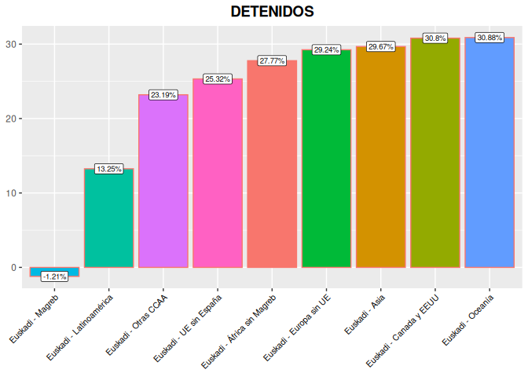

En esta página veremos la criminalidad total
En este sentido, veamos un gráfico de sectores.
En la ?@fig-detenidos-investigados-total se observa la diferencia porcentual entre detenidos e investigados, en cuanto a si son nacionales o extranjeros.
|
|
|
Gráficos de detenidos e investigados por criminalidad total.
| Detenidos | Investigados | |
|---|---|---|
| Nacionales | 38.7% | 42.6% |
| Extranjeros | 61.3% | 57.4% |
|
|
|
Gráficos de detenidos e investigados por criminalidad total.
| Nacionales | Extranjeros | |
|---|---|---|
| Detenidos | 16% | 29% |
| Investigados | 84% | 71% |
|
|
|
Gráficos de detenidos e investigados por criminalidad total en todo el mundo.
|
 |
|
Porcentajes de detenidos e investigados.
| Lugar | Detenidos | Investigados | Investigados-Detenidos |
|---|---|---|---|
| Euskadi - Otras CCAA | 23.19 % | 23.21 % | 0.02 % |
| Euskadi - UE sin España | 25.32 % | 36.47 % | 11.15 % |
| Euskadi - Europa sin UE | 29.24 % | 39.58 % | 10.34 % |
| Euskadi - Magreb | -1.21 % | 21.08 % | 22.29 % |
| Euskadi - África sin Magreb | 27.77 % | 40.51 % | 12.74 % |
| Euskadi - Latinoamérica | 13.25 % | 26.49 % | 13.24 % |
| Euskadi - Canada y EEUU | 30.8 % | 40.85 % | 10.05 % |
| Euskadi - Asia | 29.67 % | 39.99 % | 10.32 % |
| Euskadi - Oceanía | 30.88 % | 40.91 % | 10.03 % |
El número de detenidos españoles por criminalidad total ha sido de 3567 personas.
Porcentaje de detenidos españoles: 38.68% con respecto al porcentaje de detenidos extranjeros
Porcentaje de detenidos extranjeros: 61.32% con respecto al porcentaje de detenidos españoles.
Porcentaje de investigados españoles: 57.43%
Porcentaje de investigados extranjeros: 42.57%